K562 Neither DNase matched - State 13:Ctcf (n=75)
K562 Neither DNase matched - State 13:Ctcf (n=75)
[See group descriptions]
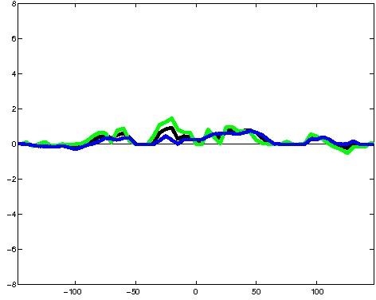
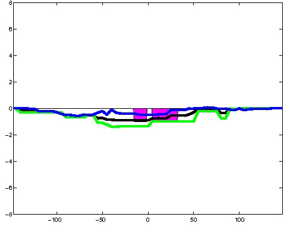
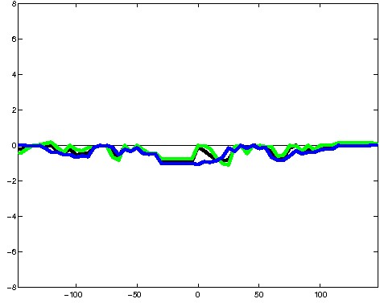
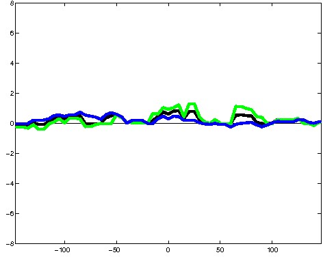
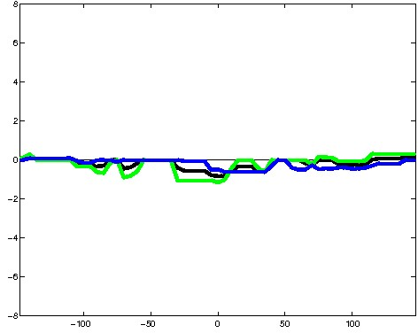
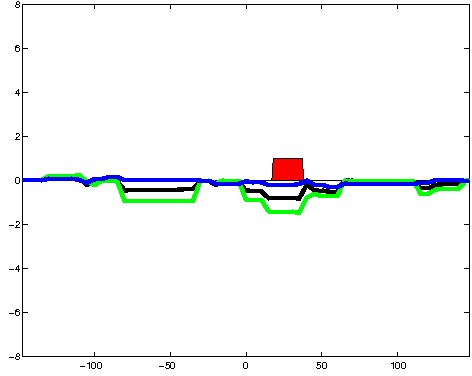
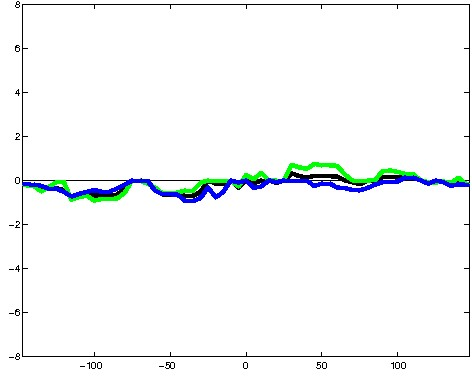
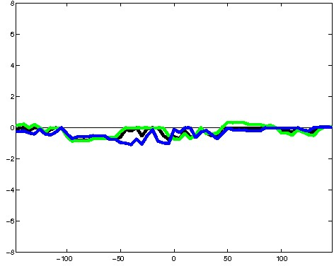
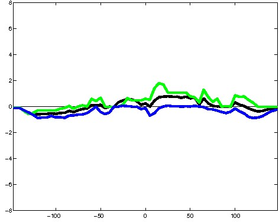
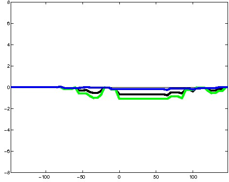
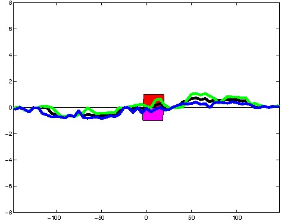
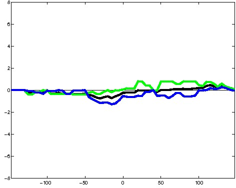
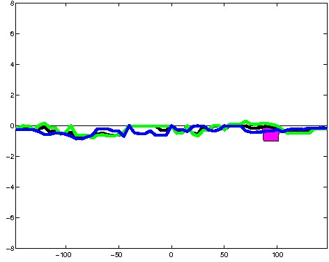
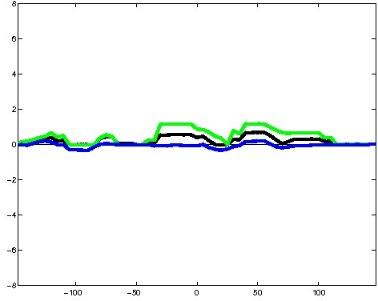
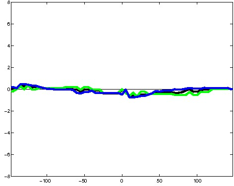
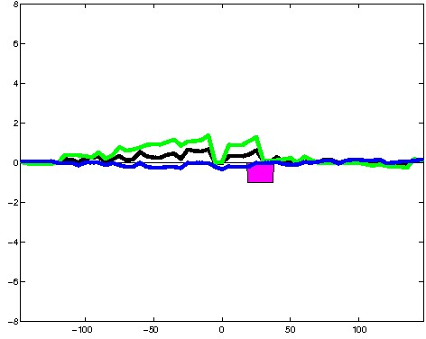
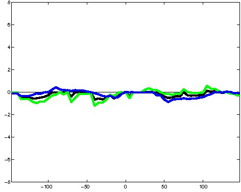
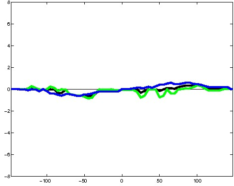
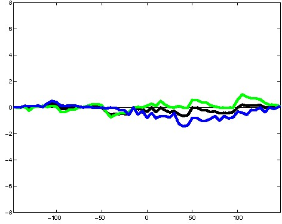
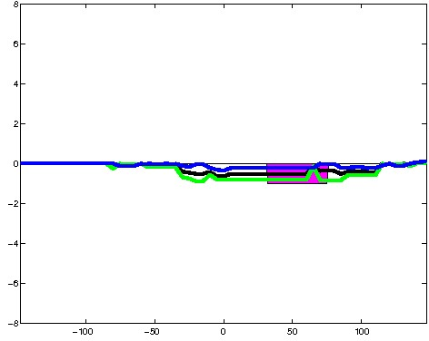
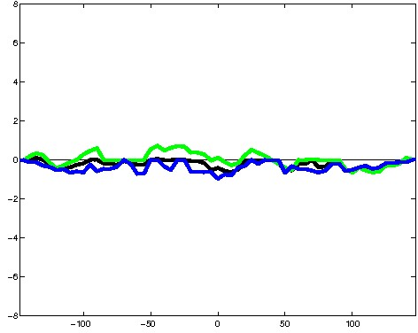
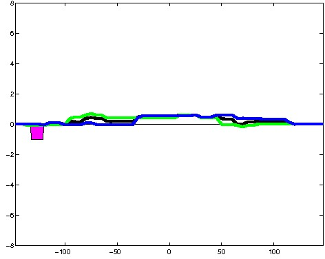
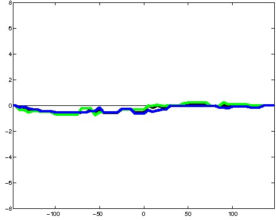
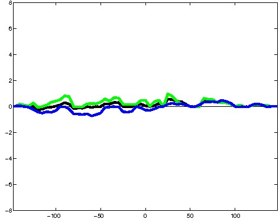
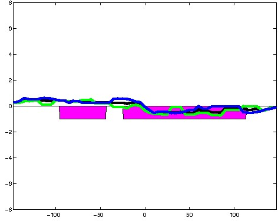
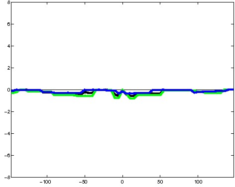
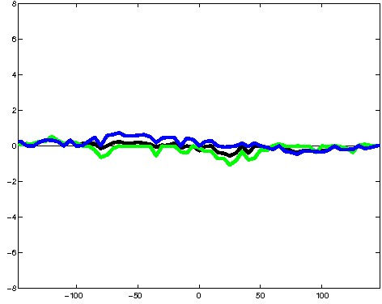
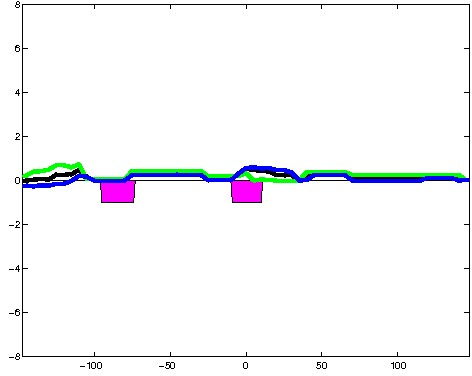
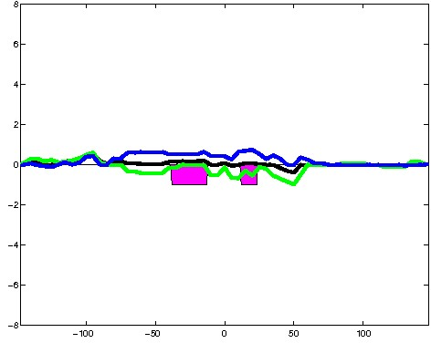
; picked in K562 (state 13:Ctcf, DNase); matched; chr2:217,381,469-217,381,763 (295bp)") 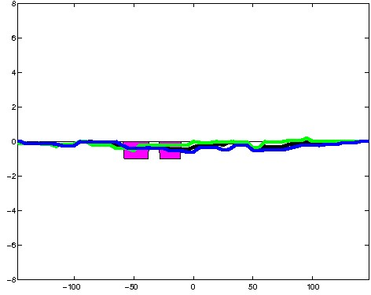
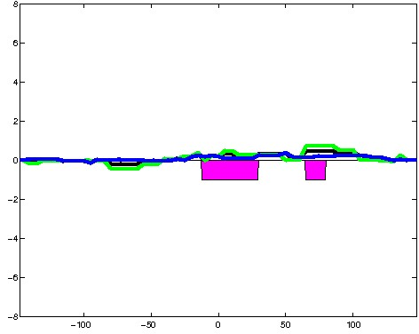
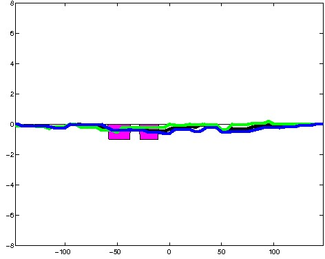
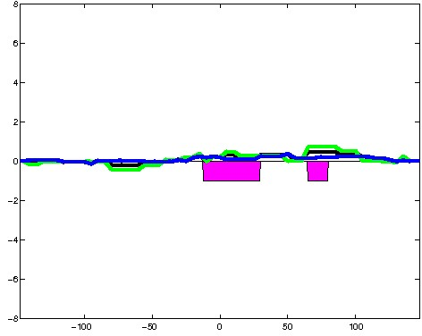
; picked in K562 (state 13:Ctcf, DNase); matched; chr2:180,942,029-180,942,323 (295bp)") 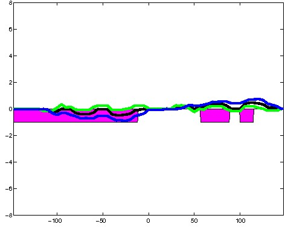
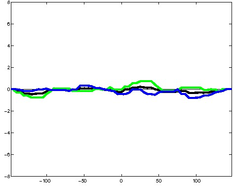
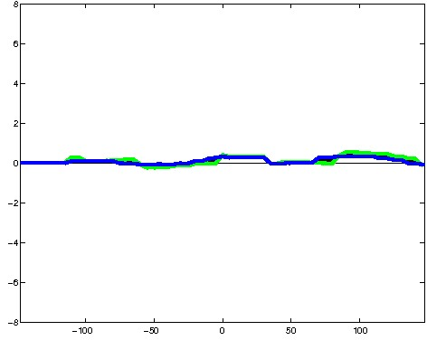
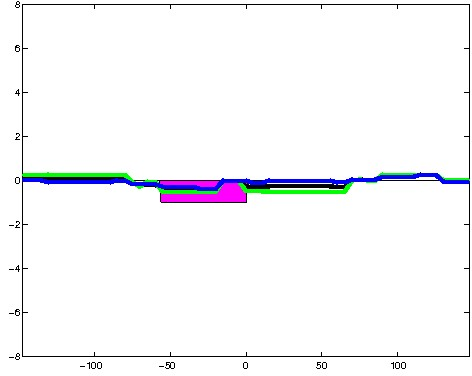
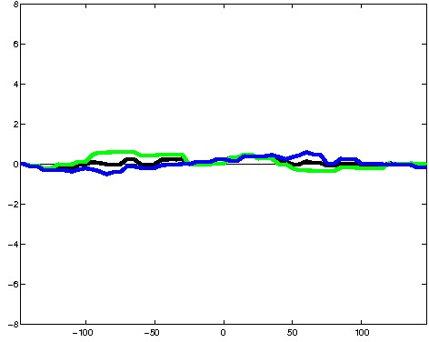
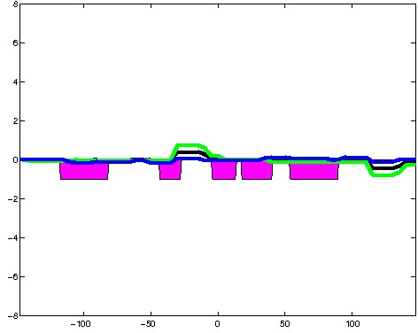
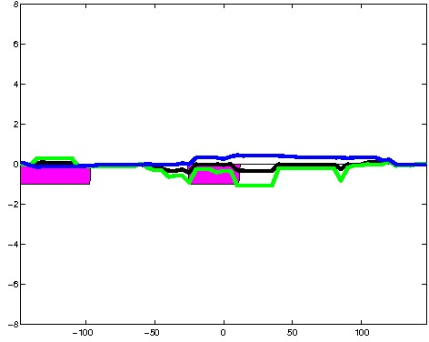
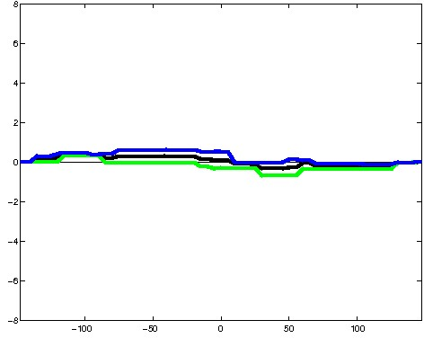
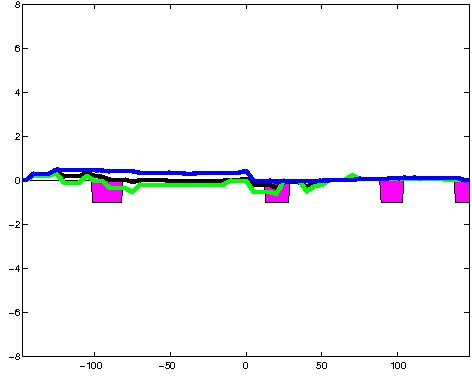
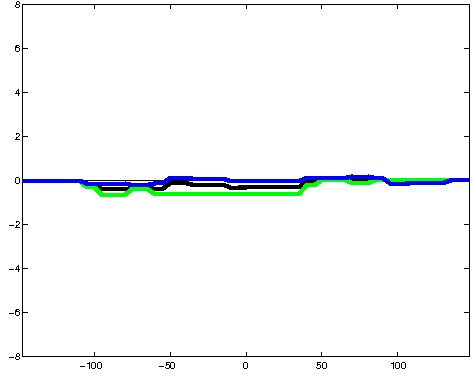
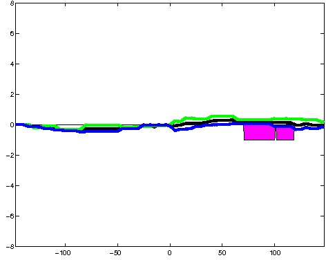
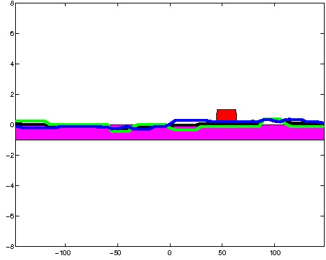
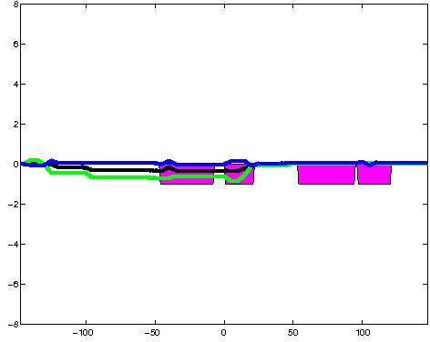
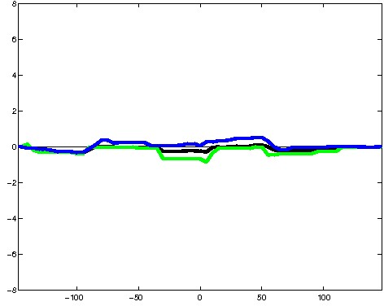
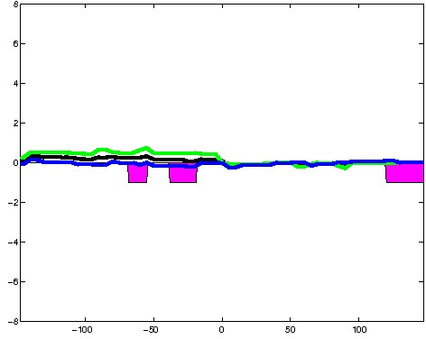
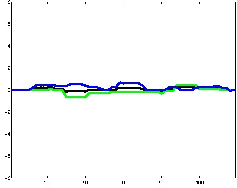
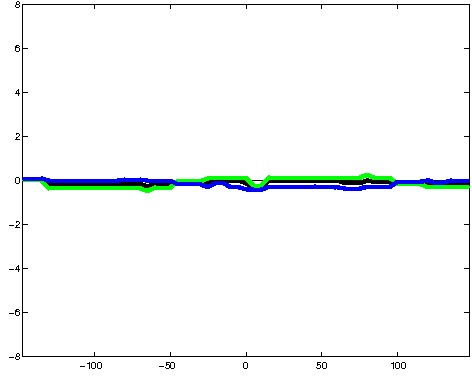


; picked in K562 (state 13:Ctcf, DNase); matched; chr19:51,166,889-51,167,183 (295bp)")
; picked in K562 (state 13:Ctcf, DNase); matched; chr8:73,232,069-73,232,363 (295bp)")